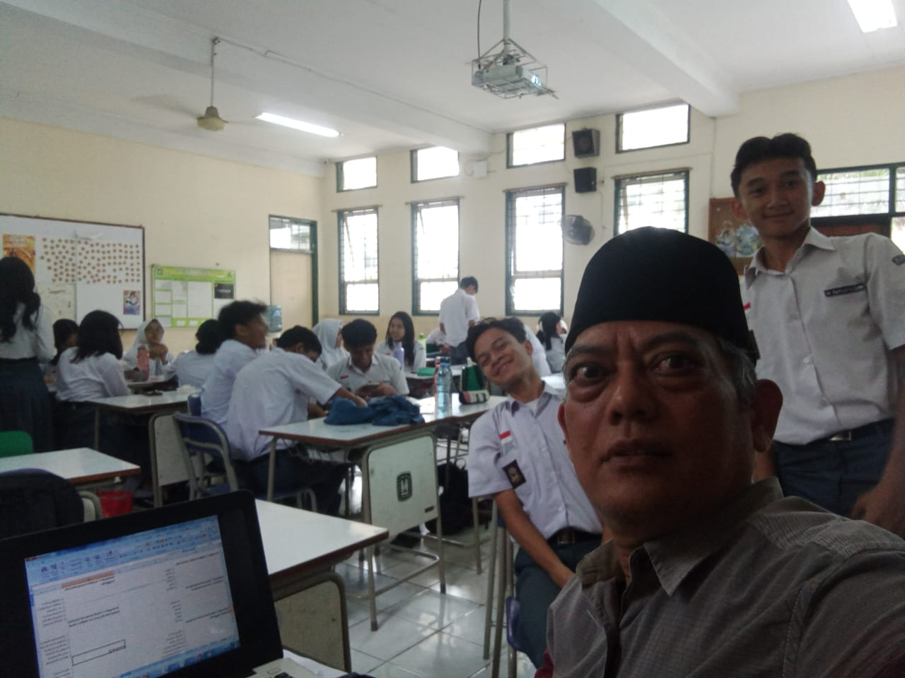

Projek Penguatan Profil Pelajar Pancasila adalah pembelajaran kolaboratif lintas disiplin ilmu dalam mengamati, mengeksplorasi, dan/atau merumuskan solusi terhadap isu atau permasalahan nyata yang relevan bagi Peserta Didik.
Projek penguatan profil pelajar Pancasila dilaksanakan dengan memperhatikan ketersediaan sumber daya Satuan Pendidikan dan Peserta Didik. Projek ini dikembangkan oleh Satuan Pendidikan mengacu pada panduan yang ditetapkan oleh pejabat pimpinan tinggi madya yang melaksanakan tugas di bidang Kurikulum.
Beranda
Tekno
Apa Arti P5 dalam Kurikulum Merdeka? Ini Tujuan, Prinsip, dan Manfaatnya
Reporter
Andika Dwi
Editor
Devy Ernis
Selasa, 22 Agustus 2023 16:54 WIB
image-gnews
Bagikan
image social image social image social image social
Suasana ruang kelas di Jakarta pada Selasa (21 Maret 2023). Kementerian Pendidikan, Kebudayaan, Riset, dan Teknologi telah membuka pendaftaran bagi satuan pendidikan yang ingin menerapkan Kurikulum Merdeka pada tahun pelajaran 2023-2024. (ANTARA/HO-Kemendikbudristek)
Suasana ruang kelas di Jakarta pada Selasa (21 Maret 2023). Kementerian Pendidikan, Kebudayaan, Riset, dan Teknologi telah membuka pendaftaran bagi satuan pendidikan yang ingin menerapkan Kurikulum Merdeka pada tahun pelajaran 2023-2024. (ANTARA/HO-Kemendikbudristek)
Iklan
TEMPO.CO, Jakarta - Kurikulum Merdeka merupakan kurikulum pembelajaran intrakurikuler dengan beragam konten dan karakteristik yang optimal. Kurikulum ini dibuat agar peserta didik mempunyai cukup waktu untuk memahami konsep serta menguatkan kompetensi. Salah satu karakteristik dalam Kurikulum Merdeka adalah Projek Penguatan Profil Pelajar Pancasila (P5).
Apa itu P5 dalam Kurikulum Merdeka?
Dilansir dari situs Balai Guru Penggerak (BGP) Sulawesi Utara, Kementerian Pendidikan, Kebudayaan, Riset, dan Teknologi (Kemdikbud ristek), P5 adalah pembelajaran lintas disiplin ilmu untuk mengamati dan merenungkan solusi terhadap permasalahan yang terjadi di lingkungan sekitar.
Baca juga:
Lolos Seleksi Administrasi? Simak Jadwal Tes SKD dan SKB CPNS 2024
P5 menggunakan pendekatan pembelajaran berbasis proyek (project-based learning) yang beraneka ragam dalam program intrakurikuler di kelas. P5 menjadi salah satu sarana untuk meraih profil Pelajar Pancasila, memberikan kesempatan untuk mendapatkan pengetahuan sebagai proses penguatan karakter siswa, serta menjadi wadah untuk belajar dari lingkungan sekitar.
Tujuan P5
Berdasarkan Panduan Pengembangan Projek Penguatan Profil Pelajar Pancasila oleh Badan Standar, Kurikulum, dan Asesmen Pendidikan Kemdikbud Ristek, P5 diharapkan dapat menginspirasi siswa untuk berkontribusi bagi lingkungan di sekitarnya. Penguatan P5 bertujuan menjadi sarana optimal dalam mendorong peserta didik menjadi pembelajar sepanjang hayat yang kompeten, berkarakter, serta berperilaku sesuai nilai-nilai Pancasila.
Dalam skema kurikulum, pelaksanaan P5 terdapat di dalam Keputusan Menteri Pendidikan, Kebudayaan, Riset, dan Teknologi (Kepmendikbud ristek) No. 56/M/2022 tentang Pedoman Penerapan Kurikulum dalam Rangka Pemulihan Pembelajaran. Disebutkan bahwa struktur kurikulum di jenjang Pendidikan Anak Usia Dini (PAUD), serta pendidikan dasar dan menengah terdiri atas kegiatan belajar intrakurikuler dan P5.